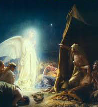

.jpg "Jainism")


 1
1 2
2 3
3 4
4 5
5 6
6 7
7 8
8 9
9 10
10 11
11 12
12 13
13 14
14 15
15 16
16Christian |
www.thereligious.com |
Son of MotherMy Mother Mary Almighty God, you chose Mary of Nazareth to be the Mother of your Son, our Lord Jesus Christ. May Our devotion in her honor be pleasing to you .We ask this thought our Lord Jesus Christ, your Son, who lives and reigns with you and the Holy Spirit, one God, forever and ever. Amen. |
Jesus ChristThe historicity of Jesus is distinct from the related study of the historical Jesus, which refers to scholarly reconstructions of the life of Jesus, based primarily on critical analysis of the gospel texts.Historicity, by contrast as a subject of study different from history proper is concerned with two different fundamental issues. Firstly it is concerned with the systemic processes of social change, and secondly what was the social context and intentions of the authors of the sources by which we can establish the truth of historical events, separating mythic accounts from factual circumstances. |
Holy SpiritFor the majority of Christian denominations, the Holy Spirit or Holy Ghost is the third person (hypostasis) of the Trinity: the Triune God manifested as Father, Son, and Holy Spirit; each person itself being God. Some Christian theologians identify the Holy Spirit with the Ruach Hakodesh (Holy Breath) in Jewish scripture, and with many similar names including: the Ruach Elohim (Spirit of God), Ruach YHWH (Spirit of Yahweh), Ruach Hakmah (Spirit of Wisdom);In the New Testament it is identified, among others, with the Spirit of Christ, the Spirit of Truth, the Paraclete and the Holy Spirit. The New Testament details a close relationship between the Holy Spirit and Jesus during his earthly life and ministry.The Gospels of Matthew and Luke and the Nicene Creed state that Jesus was "conceived by the Holy Spirit, born of the Virgin Mary".The Holy Spirit descended on Jesus like a dove during his baptism, and in his Farewell Discourse after the Last Supper Jesus promised to send the Holy Spirit to his disciples after his departure. |
 |
ChristmasPopular myth puts his birth on December 25th in the year 1 C.E. The New Testament gives no date or year for Jesus' birth. The earliest gospel – St. Mark's, written about 65 CE – begins with the baptism of an adult Jesus. This suggests that the earliest Christians lacked interest in or knowledge of Jesus' birthdate. The year of Jesus birth was determined by Dionysius Exiguus, a Scythian monk, "abbot of a Roman monastery. His calculation went as follows: In the Roman, pre-Christian era, years were counted from ab urbe condita ("the founding of the City" [Rome]). Thus 1 AUC signifies the year Rome was founded, 5 AUC signifies the 5th year of Rome's reign, etc. Dionysius received a tradition that the Roman emperor Augustus reigned 43 years, and was followed by the emperor Tiberius. Luke indicates that when Jesus turned 30 years old, it was the 15th year of Tiberius reign. If Jesus was 30 years old in Tiberius' reign, then he lived 15 years under Augustus (placing Jesus birth in Augustus' 28th year of reign). |
New YearNew Year is the time at which a new calendar year begins and the calendar's year count increments by one. Many cultures celebrate the event in some manner.[1] The New Year of the Gregorian calendar, today mostly in use, falls on 1 January (New Year's Day), as was the case both in the old Roman calendar (at least after about 713 BCE) and in the Julian calendar that succeeded it. The order of months was January to December in the Old Roman calendar during the reign of King Numa Pompilius in about 700 BCE, according to Plutarch and Macrobius, and has been in continuous use since that time. Many countries, such as the Czech Republic, Italy, Spain, the UK, and the United States, mark 1 January as a national holiday.During the Middle Ages in western Europe, while the Julian calendar was still in use, authorities moved New Year's Day variously, depending upon locale, to one of several other days, among them: 1 March, 25 March, Easter, 1 September, and 25 December. |

|
Easter FastivalEaster and the holidays that are related to it are moveable feasts which do not fall on a fixed date in the Gregorian or Julian calendars which follow only the cycle of the sun; rather, its date is determined on a lunisolar calendar similar to the Hebrew calendar. The First Council of Nicaea (325) established two rules, independence of the Jewish calendar and worldwide uniformity, which were the only rules for Easter explicitly laid down by the council. No details for the computation were specified; these were worked out in practice, a process that took centuries and generated a number of controversies. It has come to be the first Sunday after the ecclesiastical full moon that occurs on or soonest after 21 March,but calculations vary in East and West. |
Biggest ChurchChurch buildings are religious centers that allow believers to come together to participate in worship activities. The earliest Christians gathered in homes, and the first church was not built until sometime between 233 and 256 AD. The traditional architectural styles are basilicas and cathedrals although there has been a recent movement toward alternative buildings which usually involve remodeling pre-existing buildings. The following article includes all three types of architectural styles and identifies the biggest Christian Church buildings on Earth. |

|